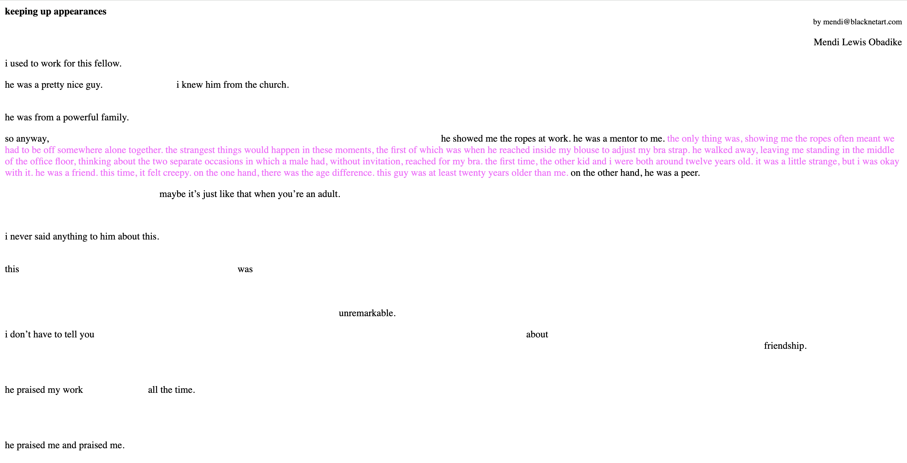

Black Expression in
the Digital Age
Curated by Eric Cho
This exhibition showcases how Net Art has been utilized as a medium of dissent and social critique,
particularly in addressing racial injustice and systemic inequality in this society. The works exhibited
include Blackness for Sale by Keith Obadike, Rent-A-Negro by Damali Ayo, and Keeping Up Appearances by
Meni Obadike. All of these works express or imply frustration and anger toward the injustice and inequality
rooted in racism, using the internet itself as a stage for critique.
Both Blackness for Sale and Rent-A-Negro
satirize the common perception of black people’s lives or past, revealing harsh realities black people have been enduring.
Keeping Up Appearances highlights the pressures and oppressions commonly experienced by Black women. Together, these works
illustrate how net art serves not only as an innovative art piece but also as an effective tool for resistance and amplifying
the voices of those who are ignored or suppressed in society.

Rent-A-Negro, created by Damali Ayo in 2003
Rent-A-Negro is satirical net art that presents a fictional service renting a
Black person to clients for social or cultural capital. This exposes the ongoing objectification and
exploitation of Black people and labor online.

Blackness for Sale, created by Keith Obadike in 2001
Keith Obadike put his “Blackness” on eBay for sale. This criticizes
how Black identity and culture are commodified, presenting “pros and cons” of blackness to expose
societal stereotypes and the reduction of Black people to cultural capital in digital and capitalist spaces.

Keeping Up Appearances, created by Mendi Obadike in 2001
Keeping Up Appearances is a minimalist hypertext net art piece that reveals hidden
text when the cursor hovers over the screen. The hidden lavender texts with black texts together reveal Mendi
Obadike’s uncomfortable and unequal relationship she experienced as a young Black woman.